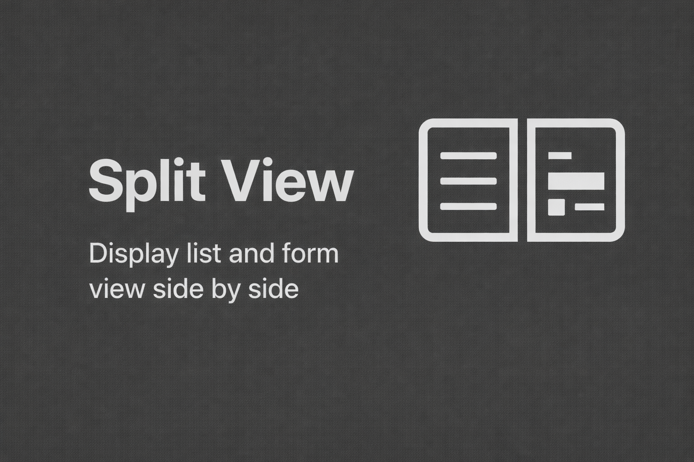

View list/kanban and form side by side. Stop switching back and forth — review and edit records faster, right where you are.

A lightweight productivity boost — open and free for every Odoo user.
Works automatically with standard List and Kanban views. Toggle it on or off with a single click.
Adjust the split ratio to your liking. Drag the separator to see more of the list or the form.
Auto-saves changes when switching records. Supports keyboard navigation and the pager for rapid processing.
Remembers your split position and state between sessions.
Smart buttons display in the split form, with Print, Export, and Delete action menus supported.
No configuration required — just install and click.
1. Navigate to any supported List or Kanban view.
2. Click the Split View icon in the control panel.
3. Select a record to open it in the side panel.
4. Edit, save, or navigate — all without leaving the list.
Actively maintained and aligned with Odoo 19 internals.
We released Split View as free and open-source software (LGPL-3). Use it, modify it, and ship it in your own projects — no license fee, ever.
Albirru Solutions is a Jakarta-based IT services company helping businesses get more out of Odoo.
Credibility rooted in experience — end-to-end technology services under one partner.
Custom apps, ERP & Odoo implementation, API integration, and Flutter mobile apps.
Cloud migration, high-availability design, server management, backups, and network design.
IT outsourcing, helpdesk support, 24/7 monitoring, maintenance, and procurement consulting.
Security audits, vulnerability assessments, firewall management, data protection, and training.
The module is free — our expertise makes it work for you. Get professional Odoo implementation, customization, training, and support from Albirru Solutions.
Split View · Free & Open Source (LGPL-3) · © Albirru Solutions (Irwan Syah)